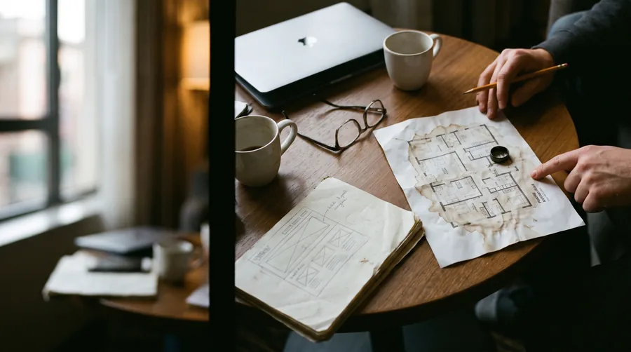
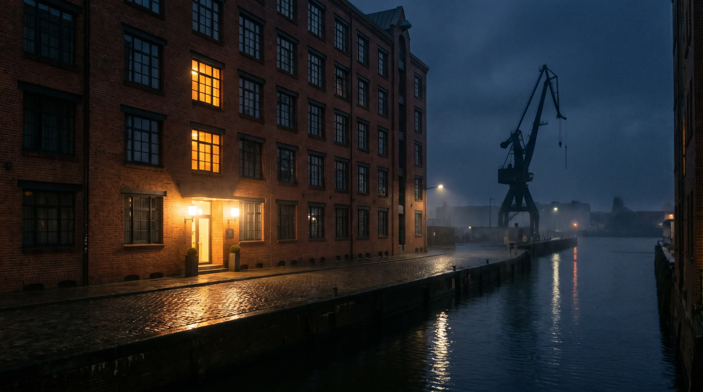
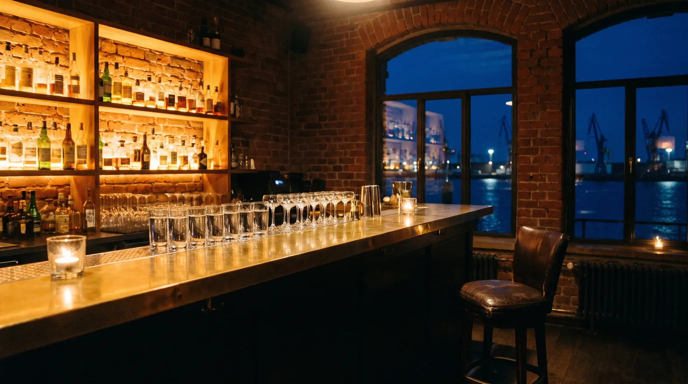
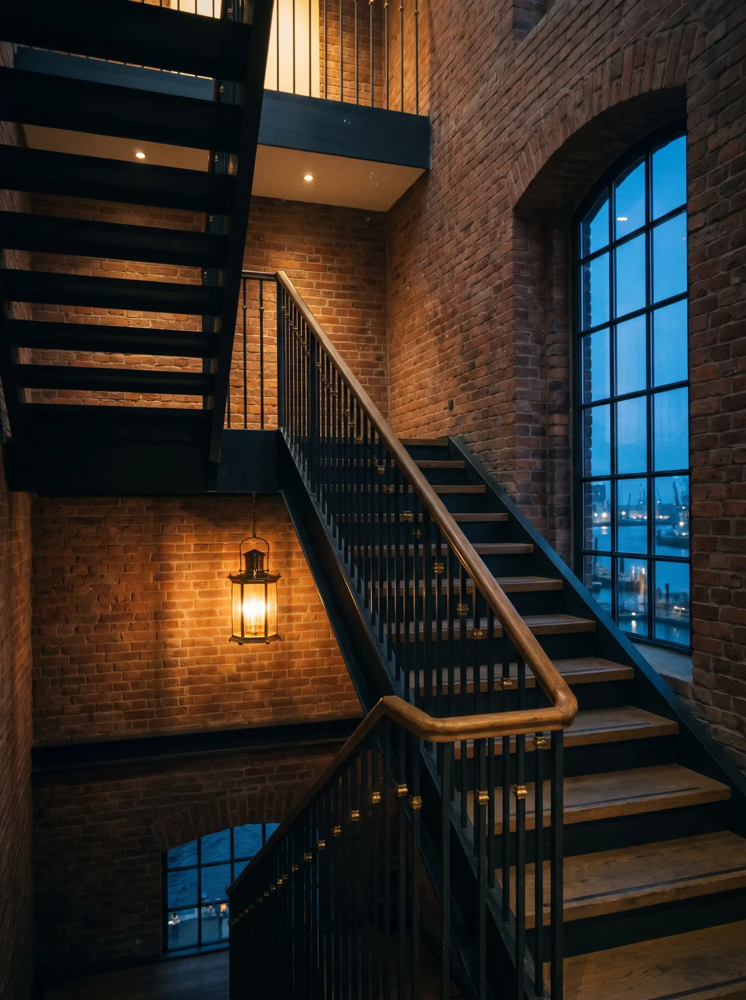
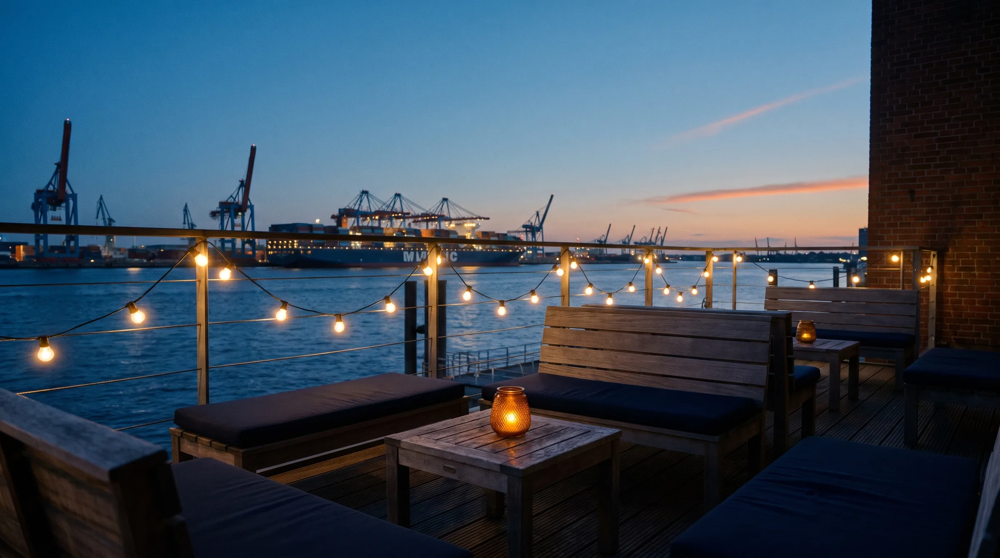
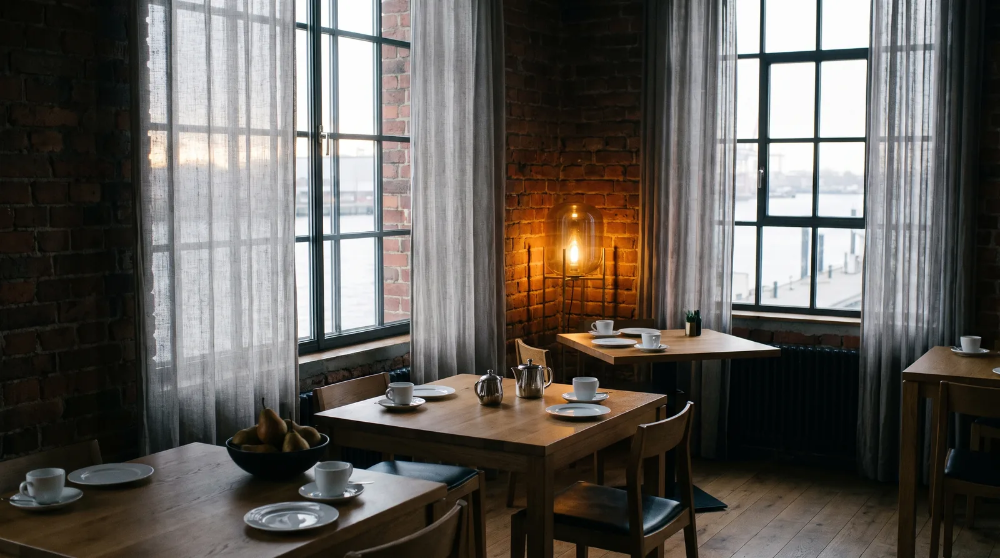
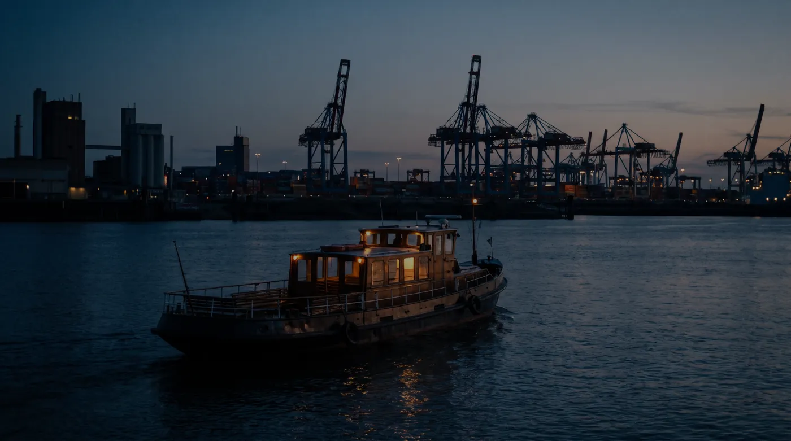

DER ORTAm Hafen.
Speicherstadt, Kaimauer, Werkstatt. Die Bilder zeigen den Ort, das Logo bleibt klein.
MARKENBUCH · NOVEMBER 2026
Digital Hospitality Studio
HAMBURG
Alles, was Tasty Studios erkennbar macht, an einem Ort: die drei Zeichen von Agentur, Masterclass und Backoffice, die Farben und woher sie kommen, die Schriften der Website und der Dokumente, die Bilder, die Bausteine und die Sprache. Damit jedes neue Stück, ob Website, Werkzeug, Brief oder Beitrag, im gleichen Stil entsteht.
HALTUNG
Tasty Studios baut für Gastronomie und Hotellerie: Websites mit Werkzeugen, das Backoffice und die Masterclass. Für kleine und mittelständische Betriebe, familien- und inhabergeführt, auch mit mehreren Häusern. Der Grund dahinter: die Vielfalt in Gastronomie und Hotellerie bewahren, bevor unabhängige Betriebe von grossen Systemen verdrängt werden. Robert bringt zwölf Jahre Gastronomie mit, Anna die Hotellerie.
Speicherstadt, Kaimauer, Werkstatt. Die Bilder zeigen den Ort, das Logo bleibt klein.

Wir filtern vor, was im Betrieb etwas bringt, und erklären es am Beispiel des Betriebs.
Notion-Backoffice, KI und Second Brain als Antwort auf die Probleme, die im Betrieb jeden Tag auftauchen.

Hamburgbei Nacht.
Die Bilder der Website spielen in der Speicherstadt.
EIN DACH, DREI ZEICHEN
Jedes Zeichen steht für sich. Gemeinsam sind ihnen scharfe Schnitte, schmale Spalten und glatte Flächen. Der Mittelschnitt verbindet alle drei.
Backstein, Tau, Stahl und Wasser. Jede Seite gebaut wie ein Schiff.
NavyTaupeSignalrot
Ordnung im Betrieb. Die Arbeit, die der Gast nie sieht. Licht nur dort, wo gearbeitet wird.
NachtSchieferWeiss
Wissen für Gastgeber. Gastgeber unter sich, in Backstein und Abendlicht.
CremeTaupeNacht
Der Anker ist das Zeichen von Tasty Studios, überall: Briefe, Werkzeuge, Unterlagen, Cockpit. Das T gehört nur zum Backoffice, der Doktorhut nur zur Masterclass.
IM EINSATZ

Oben links in der Leiste der Agentur-Website vor dem Namen und im runden Knopf unten rechts.

Als Zeichen der Seite und gross im Titelbild des Notion AI Backoffice.

In der Leiste der Gastronomie AI Masterclass, vor dem Namen des Kurses.
ANKER UND NAME
Der Anker ist eine Datei und wird so eingesetzt, wie er geliefert ist. Daneben steht der Name wie auf der Website: Antonio 700, in Versalien, leicht gesperrt, in einer Farbe.
RICHTIGVier Fassungen
Die Hauptfassung, auf dunklem Grund.
Auf der Markenfläche in warmem Creme.
Auf hellem Grund dunkel, Form unverändert.
Auf Creme in Navy, für Briefe und Drucksachen.
FALSCHAcht Dinge, die nie vorkommen
Die Proportion bleibt, nie breiter oder höher gezogen.
Der Anker steht gerade.
Nur Weiss, Creme, Nacht und Navy.
Das Zeichen liegt flach, ohne Leuchten.
Der Anker ist eine Datei und wird nie als Umriss gesetzt.
Zwischen Licht und Kanten geht das Zeichen verloren.
Das weisse Zeichen gehört auf dunklen Grund.
Das T gehört zum Backoffice. Für Tasty Studios steht der Anker.
FARBEN
Die acht Farben aus dem Branding sind die Basis. Dazu kommen die Töne, die die Website benutzt: Gold, Licht und Wasser, Papier und Leinen, die Tiefen der Nacht, Holz und Stein. Ein Klick auf eine Farbe kopiert ihren Wert.
Über den Fächer fahren, ein Klick kopiert den Farbwert.
MENGENVERHÄLTNISAnteil an allen Farbstellen der Website
DIE BASIS
Die acht Farben aus dem Branding vom 16.06.2026: dunkle Flächen, Weiss und warme Akzente. Rot steht nur als Punkt.
8 Farben
GOLD
Die Betonung der Website. Gold steht an Linien, Kapitelzeilen und Knäufen.
4 Farben
LICHT UND WASSER
Die Lampen über dem Fleet und das Wasser zur blauen Stunde. Diese Töne stehen dort, wo ein Bild leuchten soll.
4 Farben
PAPIER UND LEINEN
Die hellen Flächen. Grosse Seiten stehen auf warmem Papier und Leinen.
4 Farben
DIE TIEFEN DER NACHT
Die dunklen Töne zwischen Nacht und Navy, aus denen die Website ihre dunklen Flächen baut.
4 Farben
HOLZ UND STEIN
Backstein, dunkles Holz, Espresso. Die erdigen Töne für Schrift auf Papier und für warme Flächen.
4 Farben
LESBARKEIT
Gerechnet nach dem internationalen Standard für Lesbarkeit im Netz (WCAG 2.1). Ab 4,5 zu 1 ist Lesetext gut lesbar, ab 3 zu 1 grosse Zeilen.
HERKUNFT
Die Farben der Website stecken in ihren Fotos: Backstein, Messing, Wasser zur blauen Stunde. Unter jedem Foto stehen die fünf Töne, die beim Bau dieser Seite aus dem Foto gemessen wurden, mit Wert und Anteil am Bild. Darunter die Töne der Palette, die ihnen am nächsten liegen.

DIE BAR IM SPEICHERWarmes Licht hinter den Flaschen, dahinter das blaue Fenster zum Hafen.
IN DER PALETTELichtTeakRauch
 SPEICHERSTADT BEI NACHT
SPEICHERSTADT BEI NACHTBackstein, eine Brücke, Laternen über dem Fleet.
IN DER PALETTEKobaltRauchEspresso
 DER EMPFANG
DER EMPFANGMessinglampe, dunkles Holz, die Kräne vor dem Fenster.
IN DER PALETTETaupeTeakRauch
 DER ANLEGER
DER ANLEGERBlaue Stunde, ein Licht am Steg, Wasser bis zum Horizont.
IN DER PALETTEKobaltSchieferEspresso
Papier, Siegellack und Messing auf altem Holz.
IN DER PALETTEGoldschimmerMessingRauch

DAS TREPPENHAUSZiegel, Stahl und eine Laterne vor dem Fenster.
IN DER PALETTETaupeRauchEspresso
SCHRIFT
Auf der Website stehen drei Schriften, jede mit einer festen Aufgabe: Antonio für alle Überschriften, Instrument Sans für alles, was gelesen wird, DM Mono für Etiketten und Werte. Betont wird über Farbe, nie kursiv.
SO STEHEN SIE ZUSAMMEN
WIE WIR WEBSITES DENKEN
MITGEDACHT, BEVOR DER GAST FRAGT.
Eine Hotel-Website ist mehr als schöne Bilder und ein Knopf zum Buchen.
Wir bauen sie entlang des Weges, den ein Gast wirklich geht: vom ersten Blick über die Anreise bis zum letzten Zug nach Hause.
ÜBERSCHRIFTEN
MITGEDACHT, BEVOR DER GAST FRAGT.
ABCDEFGHIJKLMNOPQRSTUVWXYZ
abcdefghijklmnopqrstuvwxyzäöüß
0123456789 · Hamburg · 20457
LESETEXT
Wir bauen für Hotels und Restaurants die Website und das System dahinter.
ABCDEFGHIJKLMNOPQRSTUVWXYZ
abcdefghijklmnopqrstuvwxyzäöüß
0123456789 · Hamburg · 20457
ETIKETTEN
MARKENBUCH · 17.11.2026
ABCDEFGHIJKLMNOPQRSTUVWXYZ
abcdefghijklmnopqrstuvwxyzäöüß
0123456789 · Hamburg · 20457
DOKUMENTE
Verträge, Konzepte und Angebote stehen in einer einzigen Schrift: Montserrat Light 300, Regular 400 und Medium 500. Betonung entsteht über das Gewicht 500 und über Abstand. Auf jeder Seite liegt mittig der Anker als Wasserzeichen, Deckkraft 6 Prozent.
Montserrat Light 300
ABCDEFGHIJKLMNOPQRSTUVWXYZ
abcdefghijklmnopqrstuvwxyzäöüß
0123456789 · § 1 (1) (2)
«zwischen» und «und» auf der Titelseite eines Vertrags
Montserrat Regular 400
ABCDEFGHIJKLMNOPQRSTUVWXYZ
abcdefghijklmnopqrstuvwxyzäöüß
0123456789 · § 1 (1) (2)
Fliesstext, Aufzählungen, Kapitel und Untertitel
Montserrat Medium 500
ABCDEFGHIJKLMNOPQRSTUVWXYZ
abcdefghijklmnopqrstuvwxyzäöüß
0123456789 · § 1 (1) (2)
Dokumenttitel, Überschriften und die Leitwörter «Umsetzung:» und «Was sich ändert:»
Mit §-Absätzen. Die Titelseite steht zentriert, nach einem Seitenumbruch beginnt der Vertrag mit §1.
| Rolle | Grösse | Schnitt | Satz |
|---|---|---|---|
| Dokumenttitel | 28 pt | 500 | zentriert |
| Untertitel | 17 pt | 400 | zentriert |
| «zwischen», «und» | 10 pt | 300 | zentriert |
| §-Überschrift | 12 pt | 500 | links |
| Unterüberschrift | 11 pt | 500 | links |
| Fliesstext | 11 pt | 400 | links |
Konzept, Angebot, Bericht. Zwei Ebenen: Kapitel zentriert mit Einleitung, Abschnitt links, die Nummer in 500, der Rest in 400.
| Rolle | Grösse | Schnitt | Satz |
|---|---|---|---|
| Kapitel | 22 pt | 400 | zentriert |
| Einleitung | 11 pt | 400 | zentriert |
| Abschnitt | 15 pt | 500 / 400 | links |
| Leitwort | 12 pt | 500 | links |
| Fliesstext | 11 pt | 400 | links |
| Aufzählung | 11 pt | 400 | Einzug 36 pt |
Schrift durchgehend #000000 auf weissem Grund. Keine Grautöne, kein Kursiv, keine Unterstreichung ausser in Links.
A4 hochkant, Ränder 72 pt (2,54 cm) auf allen Seiten, keine Kopf- und Fusszeile, keine Seitenzahlen.
Zeilenabstand 1,15 überall, 12 pt über und unter jedem Absatz, 18 pt über jeder Überschrift. Fliesstext links, ohne Blocksatz.

Warmes Lichtim Dunkeln.
Das erste Gesetz der Bildsprache.
BILDSPRACHE
Gezeigt wird, was man an einem echten Abend am Hafen sieht: Backstein, Messing, Wasser zur blauen Stunde, eine lange Tafel bei Kerzenlicht. Niemand posiert.






DIE ELF GESETZEDesign-DNA, 01.10.2026
Kerze, Laterne, Abendsonne, beleuchtete Theke: kleine warme Lichtpunkte gegen dunkles Holz, dunkles Blau, Backstein oder Nacht.
Korn, Gegenlicht, goldene Stunde, Bewegungsunschärfe, echte Schatten. Kein Bild sieht nach Studio, Stock oder KI aus.
Rückenansicht, abgewandt, in einer echten Szene. Niemand posiert.
Terminal, Holzdeck, Werkstatt, Roller, Tisch, Speicherstadt. Die Stimmung kommt vom Ort.
Das Logo steht klein. Ein Bild zeigt den Ort und die Menschen, nicht die Marke.
Rot und Orange sind Punkte, nie Flächen. Alles andere bleibt gedeckt: Creme, Sand, Oliv, Flaschengrün, Navy, Braun, Amber.
Verblasster Druck, altes Holz, alter Lack, nasse Strasse. Nichts wird weggeputzt.
Illustration als feiner Strich oder Vintage-Stich. Kein Clipart, kein Verlauf, kein Neon.
Ein Witz nur, wenn er aus der Sache kommt. Keine Motivationssprüche.
Im Auftritt steht nur Hamburg.
Im Zweifel echtes Material aus Roberts Archiv nehmen und bearbeiten statt neu erzeugen.
BAUSTEINE
Die kleinen Teile, die auf der Website überall wiederkehren: der Knopf mit rundem Pfeil-Knauf und die festen Masse für Rand, Breite und Abstand.
Etikettschrift in Versalien und ein runder Knauf mit Pfeil. Beim Überfahren hebt sich der Knopf. Die Beschriftung sagt, was passiert.
Rand und Abstand wachsen mit dem Bildschirm, aber nur zwischen diesen Grenzen. Der Inhalt wird nie breiter als 1480 px.
SPRACHE
Direkt und sachlich. Kein künstlicher Druck. Wenn etwas komplex ist, wird es verständlich gemacht. Wenn etwas einfach ist, wird es nicht unnötig aufgeblasen.
Wir duzen.
Jeder Satz sagt etwas Bestimmtes: eine Tatsache, eine Zahl, einen Schritt. Sätze ohne Inhalt werden gestrichen.
Ultimate · Master · Pro · Framework · Blueprint · Playbook · Toolkit
ZUM MITNEHMEN
Die drei Zeichen als Dateien, die Farben als fertige Datei, die Schriften der Website. Wer eine neue Seite, einen Brief oder einen Beitrag baut, findet hier alles, was dafür nötig ist.
TASTY STUDIOS
Markenbuch · Tasty Studios · Stand 17.11.2026. Abgleich mit der Website, Werte und Dateien im Arbeitsbereich.